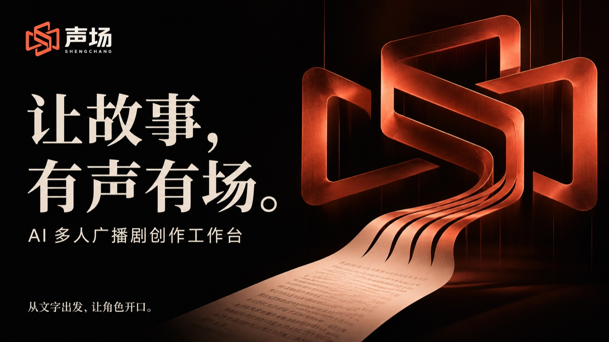

小说进，成片出。粘贴一章小说，声场把它拆成场景与角色，逐句生成带表演方向的配音，混入声音世界，导出广播响度标准的整集成片。

市面上的工具停在“角色换个音色”。声场把每一句台词的表演——情绪、强度、潜台词、声音距离——变成可编辑、可缓存、可断点恢复的生产参数。
每句台词独立携带情绪 / 强度 / 潜台词 / 声音距离，折叠为一条语音指令送入模型。
方向实验室：同一句台词三种演法并排试听，满意再应用——应用后再生成立即命中缓存。
拆解 → 音色 → 生成 → 体检 → 导出，五阶段断点续跑；单句失败不废整批，重试只补失败句。
内容寻址缓存：相同文本与表演参数永不重复付费；50 万字量级也稳。
项目、音频与任务全部留在本机；凭证权限 0600，服务只绑回环地址。
供应商中立：豆包语音 / 自定义 HTTP / 离线演示三通道，模型迭代不锁定工作台。
每个环节都有可视化界面与质量检查，任何一步都可以人工介入修正。
演示引擎的定位：链路是真的，声音是假的。配置豆包语音 API Key 后，同一套工程直接产出真实语音。
# 需要 Node.js 22.5+ 与 FFmpeg $ git clone https://github.com/yanjiliang/shengchang-ai-studio $ cd shengchang-ai-studio $ npm install $ npm run dev ➜ 工作台 http://127.0.0.1:4173 ➜ 制作中心 → 一键成片 → 等待整集 MP3
克隆、安装、运行，打开示例项目点「一键成片」——预估、进度、注意事项与逐句失败重试都在任务历史里等你。
# 打开示例项目「西游记 · 三打白骨精」 # 1. 制作中心 → 一键成片 → 确认预估 # 2. 自动执行：拆解 → 配音色 → 生成 → 体检 → 导出 # 3. 下载整集 MP3 与《来源清单》 # 想要真实人声？设置页填入豆包语音 API Key 即可 # 想拆自己的小说？场景导演 → 导入小说并拆解